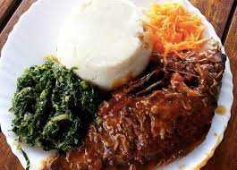
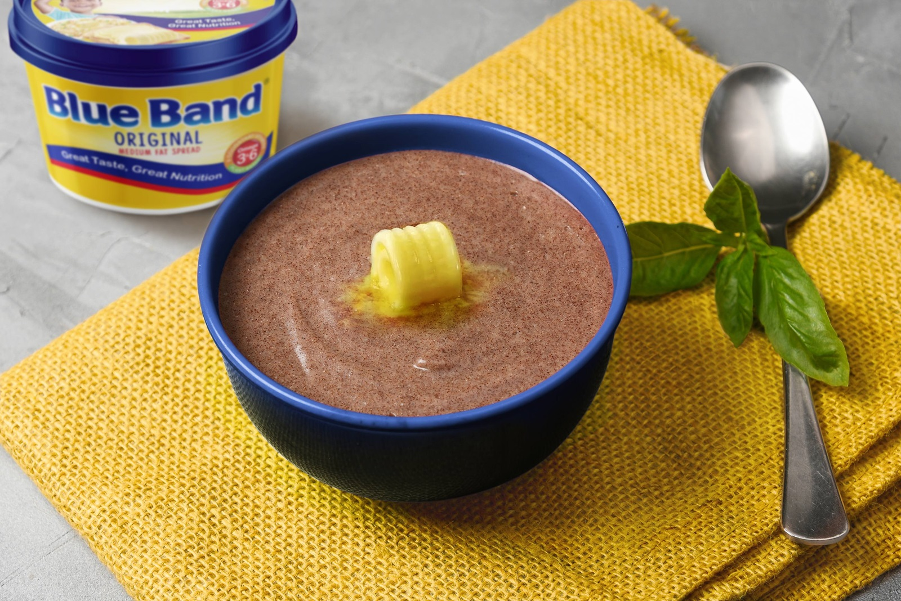

MENU

UGALI-FISH
UGALI-FISHSH.200
Taste our delicious meal of fried fish with ugali

ROAST CHICKENSH.350
Taste our deliciously prepared roast chicken

FRIED-RICESH.150
dish of cooked rice that has been stir-fried in a wok or a frying pan and is usually mixed with other ingredients such as eggs, vegetables, seafood, or meat. It is often eaten by itself or as an accompaniment to another dish.

PORRIDGE
PORRIDGESH.50
a soft food made by boiling meal of grains or legumes in milk or water until thick.

CHAPATISH.50
a round flat unleavened bread of India that is usually made of whole wheat flour and cooked on a griddle.

PIZZASH.100
Pizza is full of umami, which means “delicious” in Japanese. Just like the other types of taste, which are sweet, sour, salty, and bitter, umami is a rich and savory flavor that your taste buds taste and recognize.